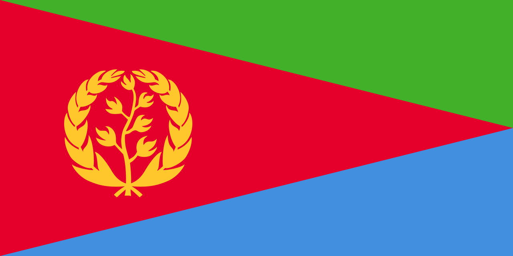

Eritreia
 A Eritreia, oficialmente Estado da Eritreia, é um país localizado no Chifre da África, na região nordeste do continente. Faz fronteira com o Sudão a oeste, a Etiópia ao sul e o Djibuti a sudeste, além de possuir uma extensa costa no Mar Vermelho a leste, com mais de 1.000 km de litoral. O país também controla as Ilhas Dahlak e outras pequenas ilhas estratégicas no Mar Vermelho. Sua capital e maior cidade é Asmara, conhecida por sua arquitetura modernista herdada do período colonial italiano.
Com uma população estimada em cerca de 3,6 milhões de habitantes, a Eritreia é um país multiétnico e multilíngue, composto por nove grupos étnicos principais. Apesar de sua localização estratégica e de seu rico patrimônio cultural, o país enfrenta desafios socioeconômicos e políticos, sendo muitas vezes apontado como um dos mais fechados do mundo em termos de liberdade de expressão e de imprensa.
História
A região da Eritreia tem uma história milenar, tendo sido habitada desde a Antiguidade por povos do Chifre da África e da Península Arábica. O território fez parte do poderoso Reino de Axum, que floresceu entre os séculos I e VII e foi uma das civilizações mais influentes da África Oriental, mantendo relações comerciais com Roma, Índia e o Oriente Médio. Após o declínio de Axum, a região foi influenciada por diversos reinos locais e pelo Islã, que se espalhou pelo litoral do Mar Vermelho.
No século XIX, a Eritreia foi colonizada pela Itália, tornando-se oficialmente colônia em 1890. Os italianos construíram infraestrutura, cidades modernas e rodovias, transformando Asmara em um centro urbano de destaque com arquitetura art déco e futurista. Durante a Segunda Guerra Mundial, o território foi ocupado pelos britânicos, e posteriormente, em 1952, a ONU decidiu federar a Eritreia com a Etiópia. No entanto, em 1962, a Etiópia anexou o território, provocando uma luta armada de independência que durou 30 anos.
A independência foi finalmente conquistada em 1993, após um referendo supervisionado pela ONU, no qual mais de 99% da população votou a favor da separação. Desde então, a Eritreia é governada pelo presidente Isaias Afwerki e pelo partido único Frente Popular para a Democracia e a Justiça (FPDJ). O país tem enfrentado tensões políticas internas, acusações de violações de direitos humanos e conflitos com a Etiópia, especialmente a guerra fronteiriça de 1998-2000. Em 2018, os dois países assinaram um acordo de paz, mas a situação política e social interna ainda permanece rígida e centralizada.
Cultura
A Eritreia é um mosaico cultural formado pela convivência de diferentes grupos étnicos e tradições. Os maiores grupos são os tigrínios, tigrés e os saho, mas o país reconhece oficialmente nove etnias, cada uma com suas próprias línguas, vestimentas e costumes. As línguas mais faladas são o tigrínia, o árabe e o inglês, sendo este último usado principalmente no ensino e nos negócios. A religião também é diversa: cerca de metade da população segue o cristianismo (sobretudo a Igreja Ortodoxa Eritreia) e a outra metade é muçulmana, predominando o islamismo sunita.
A música tradicional eritreia é rica em instrumentos como o krar (uma espécie de lira) e o wat (tambor). As danças em grupo, que variam conforme a etnia, são uma forma importante de expressão cultural, realizadas em casamentos, festas religiosas e eventos comunitários. A culinária reflete influências africanas e árabes, com pratos típicos como o injera (pão fermentado esponjoso) servido com ensopados picantes de lentilhas, carne e vegetais. O café é uma parte essencial da hospitalidade, sendo servido em uma cerimônia tradicional semelhante à da Etiópia. Asmara, a capital, é conhecida como a "Pequena Roma" por seus prédios modernistas e art déco construídos durante a ocupação italiana, e foi declarada Patrimônio Mundial da UNESCO em 2017. Essa herança arquitetônica, misturada com influências africanas, torna a cidade única no continente.

Clima
O clima da Eritreia varia bastante em função da sua topografia. As regiões costeiras, próximas ao Mar Vermelho, apresentam clima quente e árido, com temperaturas que frequentemente ultrapassam os 40 °C durante o verão. Já o planalto central, onde se encontra a capital Asmara, possui um clima mais ameno, com temperaturas médias que variam entre 10 °C e 25 °C, proporcionando condições mais agradáveis. As áreas do sul e oeste, próximas ao Sudão e à Etiópia, são mais secas e sujeitas a longos períodos de estiagem.
As chuvas são irregulares e geralmente concentradas nos meses de junho a setembro, durante a estação chuvosa de verão. Esse regime climático influencia fortemente a agricultura, que depende das chuvas sazonais. A escassez de água e a desertificação são grandes desafios ambientais enfrentados pelo país.
Biodiversidade
Apesar de seu território árido, a Eritreia abriga uma biodiversidade notável, especialmente ao longo de sua extensa costa no Mar Vermelho. O país possui ilhas e recifes de corais que são habitat para uma ampla variedade de espécies marinhas, incluindo peixes tropicais, tartarugas, golfinhos e tubarões. As Ilhas Dahlak são consideradas uma das áreas mais ricas em vida marinha do Mar Vermelho.
No interior, as paisagens variam de desertos a planaltos e savanas, onde vivem espécies como gazelas, antílopes, hienas, chacais e leopardos. A avifauna é diversificada, com aves migratórias que utilizam a Eritreia como ponto de passagem em suas rotas entre a Europa, a Ásia e a África. O país enfrenta, entretanto, problemas de conservação devido ao desmatamento, à caça e às mudanças climáticas. Algumas áreas são protegidas, mas os esforços de preservação ainda são limitados.
.jpg )

Cidades
A capital, Asmara, é a maior e mais importante cidade da Eritreia, conhecida por sua arquitetura italiana e por ser o centro político, econômico e cultural do país. Outras cidades relevantes incluem Massawa, situada no litoral do Mar Vermelho, que já foi um importante porto histórico e ainda desempenha papel central no comércio marítimo. Massawa destaca-se também por sua arquitetura otomana e árabe, refletindo a influência de diferentes culturas ao longo dos séculos.
Keren, a terceira maior cidade, é um importante centro agrícola e cultural, cercada por montanhas e conhecida por seus mercados tradicionais e por monumentos históricos da época da colonização italiana. Assab, outro porto no sul, também foi fundamental no passado para o comércio marítimo da região. Essas cidades refletem a diversidade cultural e geográfica do país, que vai das planícies áridas às montanhas férteis e à costa do Mar Vermelho.